TL;DR: We explore the entropy mechanism in flow matching and introduce perceptual entropy to preserve diversity while improving image quality.
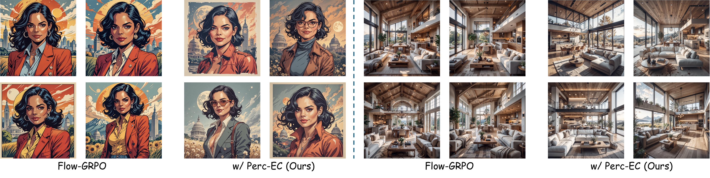
Diversity Collapse. Visual comparison on FLUX.dev. Flow-GRPO improves quality but sacrifices diversity, whereas our methods (Perc-EC & Perc-VC) maintain diverse outputs across prompts while improving quality.
RLHF is widely used to align flow-matching text-to-image models with human preferences, but often leads to severe diversity collapse after fine-tuning. In RL, diversity is often assumed to correlate with policy entropy, motivating entropy regularization. However, we show this intuition breaks in flow models: policy entropy remains constant, even while perceptual diversity collapses. We explain this mismatch both theoretically and empirically: the constant entropy arises from the fixed, pre-defined noise schedule, while the diversity collapse is driven by the mode-seeking nature of policy gradients. As a result, policy entropy fails to prevent the model from converging to a narrow high-reward region in the perceptual space. To this end, we introduce perceptual entropy that captures diversity in a perceptual space and maintains the property of standard entropy. Building upon this insight, we propose two entropy-regularized strategies, Perceptual Entropy Constraint (Perc-EC) and Perceptual VAE Constraint (Perc-VC), to preserve perceptual diversity and improve generation quality. Experiments across two base models (FLUX.dev, SD3.5-M), neural and rule-based rewards, and three perceptual spaces (PickScore, DINO, CLIP) demonstrate consistent gains in the quality-diversity trade-off; Perc-EC achieves the best overall score of 0.755 (vs. Flow-GRPO's 0.347) with a diversity average of 0.941 (vs. Flow-GRPO's 0.010).
In LLM RL, an entropy decrease directly signals diversity loss. But in flow models, we observe a striking paradox: policy entropy stays constant while perceptual diversity collapses. This means existing entropy-based regularization methods fundamentally cannot capture or prevent diversity collapse in flow-based RLHF.
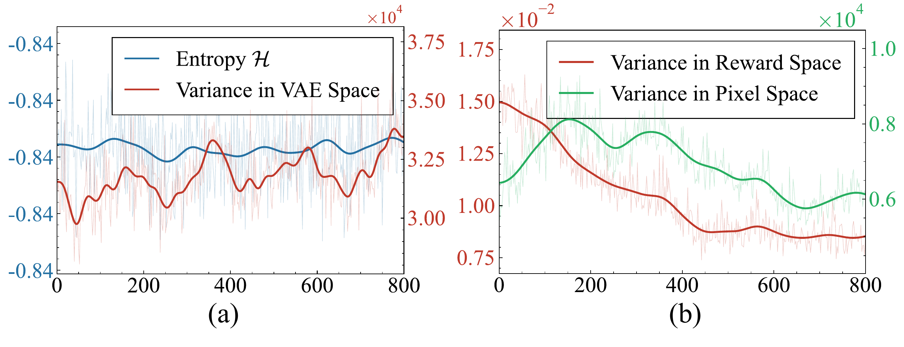
Figure 1. Training-time metrics. (a) Policy entropy and variance in VAE space — both remain constant. (b) Variance in pixel and reward space — diversity really collapses despite constant policy entropy.
We prove that the policy entropy in flow-based RL is independent of model parameters $\theta$. The key insight: in flow models, the reverse transition $p_\theta(\mathbf{x}_{t-1}\mid\mathbf{x}_t) \sim \mathcal{N}(\mathbf{x}_{t-1}; \mu_\theta, \sigma_t^2\,\mathrm{d}t\,\mathbf{I})$ has variance fixed by the prescribed noise schedule $\sigma_t$, while only the mean $\mu_\theta$ is learned. Since entropy depends on the shape (variance), not the location (mean), it remains constant:
We trace the collapse to the mode-seeking nature of on-policy policy gradients. With $p_{\theta_{\mathrm{old}}}$ and the advantage $\mathcal{A}$ fixed within an update, the policy gradient locally minimizes a reverse KL to an advantage-induced target $p_{\mathcal{A}} \propto p_{\theta_{\mathrm{old}}}\exp(\mathcal{A})$:
Since $p_{\mathcal{A}}$ is sampled from the old policy, unexplored perceptual modes are excluded from optimization, and repeated on-policy updates concentrate probability mass on a single high-reward mode. This motivates an RLHF framework that encourages broad coverage of multiple high-reward regions in perceptual space, rather than convergence to a single peak.
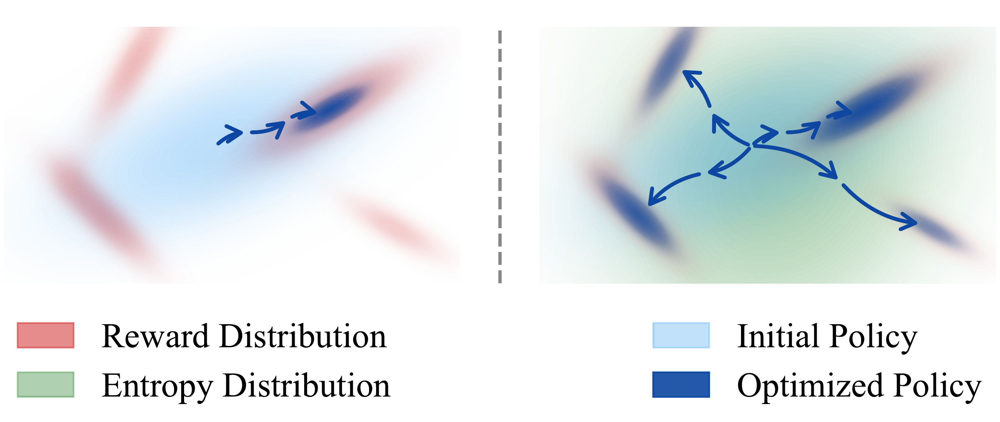
Figure 2. Optimization behavior. GRPO shows mode-seeking behavior and converges to a single-peak distribution, while an ideal model should encourage coverage of multiple regions.
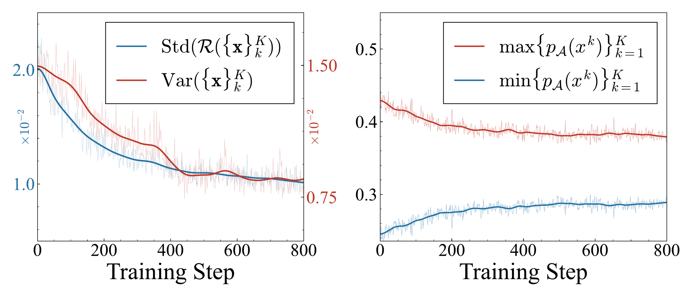
Figure 3. Training dynamics metrics. (a) Variance of reward and standard deviation of samples; (b) maximum and minimum advantage probabilities $p_{\mathcal{A}}$ during training. Both decline, consistent with mode-seeking contraction.
Intuitively, diversity collapse can be seen as the feature variance reduction in human perception. Our analysis reveals a key factor: the standard policy entropy in flow models is unable to capture this collapse, undermining the effectiveness of existing entropy-based regularization for flow matching. This motivates a new entropy concept, perceptual entropy, which captures diversity collapse in perceptual space while remaining consistent with existing entropy-based regularization methods.
Standard VAEs primarily extract low-level features, making VAE-space entropy $\mathcal{H}$ insensitive to semantic diversity. For example, slightly altering eye size in a portrait shifts VAE latents while leaving high-level semantics nearly unchanged. In contrast, perceptual entropy $\mathcal{H}_{\mathrm{perc}}$ in a high-level representation space directly captures semantic variations and reliably detects diversity collapse.
Perceptual entropy preserves the structure of standard policy entropy but is defined in the perceptual space rather than the generative latent space. Let $\phi = \mathcal{D}_{\text{vae}} \circ \mathcal{E}_{p}$, where $\mathcal{E}_{p}$ is a perceptual encoder and $\mathcal{D}_{\text{vae}}$ is a VAE decoder. Given $k$ rollout noised samples, the perceptual probability and perceptual entropy are:
where $\mathbf{m}^k$ denotes the old-policy mean $\mu_{\theta_{\mathrm{old}}}(\mathbf{x}_t^k,t,c)$. For neural network-based rewards, we use the PickScore encoder as $\mathcal{E}_{p}$ to avoid additional computational cost; frozen DINO or CLIP encoders also work.
Let $\mathbf{z}_{t-1}=\phi(\mathbf{x}_{t-1})$. Assume that, within a local reverse step, the perceptual encoder is approximately mean-preserving, i.e., $\mathbb{E}[\mathbf{z}_{t-1}\mid \mathbf{x}_t]\approx \phi(\mathbf{m})$. Then perceptual entropy tracks the expected conditional feature-space variance: $$\mathcal{H}_{\text{perc}}(p_\theta) \approx \mathbb{E}_{t,\mathbf{x}_t}\!\left[\frac{\mathrm{Var}(\mathbf{z}_{t-1}\mid \mathbf{x}_t)}{2\sigma_t^2\,\mathrm{d}t}\right] - C_t.$$ Perceptual entropy thus captures local perceptual dispersion, paralleling the latent-space variance relation of constant policy entropy and aligning with entropy-regularization analyses in LLMs.
In analogy to the empirical finding in LLMs, we propose a similar empirical entropy mechanism for flow models, where $a$ and $b$ are empirical coefficients:
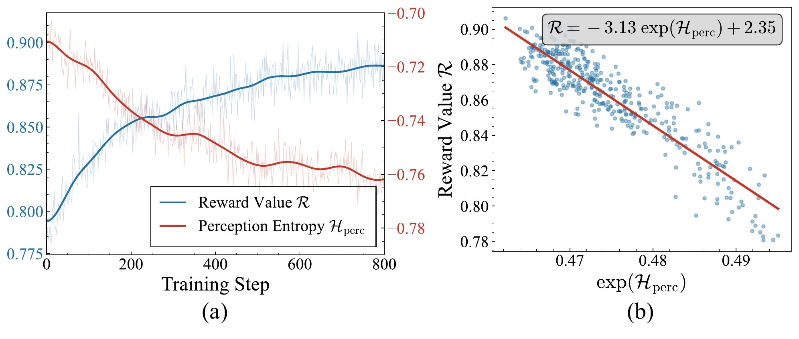
Figure 4. Relationship between Reward and Perceptual Entropy. Perceptual entropy provides an effective identifier of diversity, aligning with existing research for LLMs.
Since perceptual entropy is a reliable surrogate for conditional variance, Perc-EC maximizes it directly: $\max_\theta\, \mathbb{E}_{\mathbf{x}\sim p_\theta}[\mathcal{R}(\mathbf{x},c)] + \lambda\,\mathcal{H}_{\text{perc}}(p_\theta)$. To avoid competing gradients against the primary reward, we use perceptual reward shaping: the constraint is folded into the reward so that perceptual and task rewards are jointly normalized within the same GRPO rollout group:
Perc-VC instead anchors the collapsed perceptual distribution to the diversity-preserving generation-space prior by minimizing $D_{\mathrm{KL}}(p_\theta^{\mathrm{perc}}\Vert p_\theta^{\mathrm{vae}})$, again incorporated as a shaped reward:
Both shaped rewards are optimized with the standard GRPO clipped surrogate.
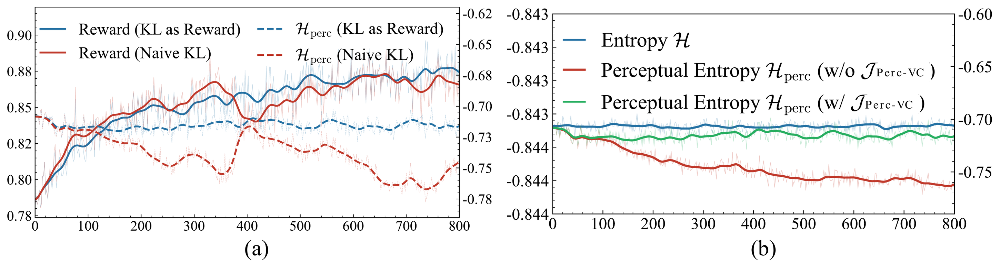
Figure 5. Optimization comparison. (a) Native KL (red) vs. KL-as-reward (blue) — perceptual reward shaping provides stable optimization. (b) Entropy with (blue) and without (red) Perc-VC.
We build upon Flow-GRPO and evaluate FLUX.dev (PickScore reward, trained on Pick-a-Pic) and SD3.5-M (rule-based rewards). Quality is measured on the HPD test set with PickScore, Aesthetic v2.5, ImageReward, CLIP, HPSv2.1 and Unified Reward; diversity is measured on 100 images per prompt over 85 PartiPrompts (8,500 images per method) with feature-space $L_2$ diversity and Vendi Scores. The overall score averages min-max normalized quality and diversity metrics.
Native per-step entropy $\mathcal{H}$ provides limited gains under flow matching: standard entropy regularization reaches an overall score of 0.245, comparable to Flow-GRPO w/ KL (0.242). Simply replacing $\mathcal{H}$ with $\mathcal{H}_{\mathrm{perc}}$ raises it to 0.427, and Perc-EC ($\lambda=0.10$, PickScore) achieves the best overall score of 0.755 with a diversity average of 0.941.
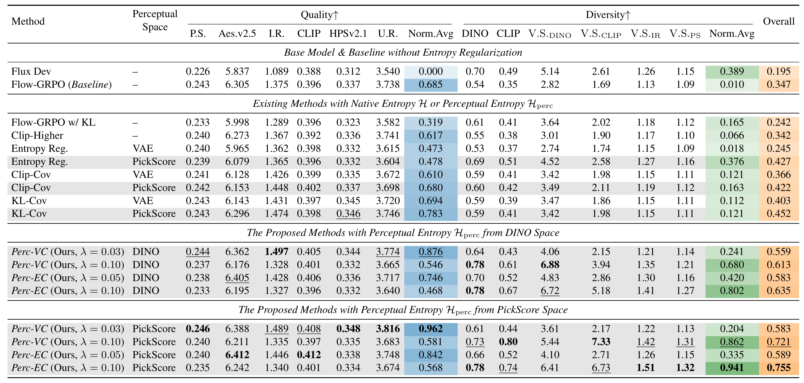
Table 1. Entropy Regularization Comparison. Gray-shaded rows denote our methods. P.S.=PickScore, I.R.=ImageReward, U.R.=Unified Reward, V.S.=Vendi Score.
Existing text-to-image models exhibit a sharp quality–diversity trade-off: SDXL achieves the highest baseline diversity (0.651) but low quality (0.205), whereas Qwen-Image attains high quality (0.711) with a diversity of 0.000. In contrast, Perc-EC ($\lambda=0.10$, PickScore) reaches the best overall score of 0.751 with a diversity average of 0.872.
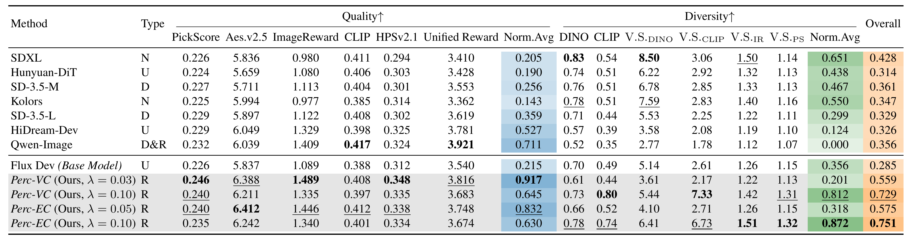
Table 2. SoTA Comparison. Type denotes post-training: N=None, U=Unknown, D=DPO, and R=reinforcement fine-tuning.
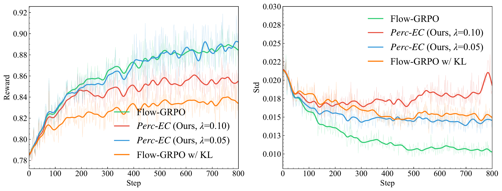
Figure 6. Training dynamics of Flow-GRPO, Flow-GRPO w/ KL, and Perc-EC. (a) Mean reward. (b) Reward standard deviation. Flow-GRPO improves quality but reduces diversity; KL alleviates the drop at a quality cost; Perc-EC strikes a better balance ($\lambda{=}0.10$ preserves diversity, $\lambda{=}0.05$ keeps quality close to Flow-GRPO).
Replacing the native per-step entropy $\mathcal{H}$ with perceptual entropy $\mathcal{H}_{\mathrm{perc}}$ inside Perc-EC improves every metric (e.g., Aes.v2.5 from 6.372 to 6.412). The perceptual encoder is much smaller than the flow model and is evaluated asynchronously from generation and optimization, so the iteration-time overhead is marginal and peak memory is nearly unchanged.
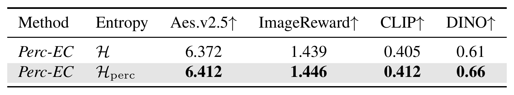
Table 3. Perceptual Entropy Ablation. $\mathcal{H}_{\mathrm{perc}}$ vs. native $\mathcal{H}$ in Perc-EC.
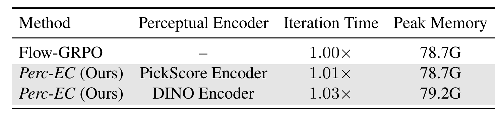
Table 4. Computational Cost. Iteration time is normalized by Flow-GRPO.
On Wan2.1-T2V-1.3B (Flow-GRPO with VideoPickScore in UniRL), both Flow-GRPO and native entropy regularization erode within-group perceptual variance as reward rises, whereas Perc-EC preserves perceptual diversity alongside high reward. Under DDPO, native entropy regularization still loses variance at $\lambda=0.05$ and destabilizes training at $\lambda=0.10$; Perc-EC maintains perceptual variance alongside high reward, and Perc-VC enables a controllable quality–diversity trade-off.
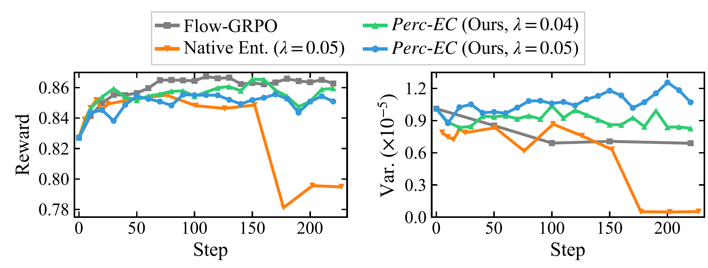
Figure 7. Text-to-Video. Training dynamics on Wan2.1. Left: reward $\mathcal{R}$. Right: within-group perceptual variance.
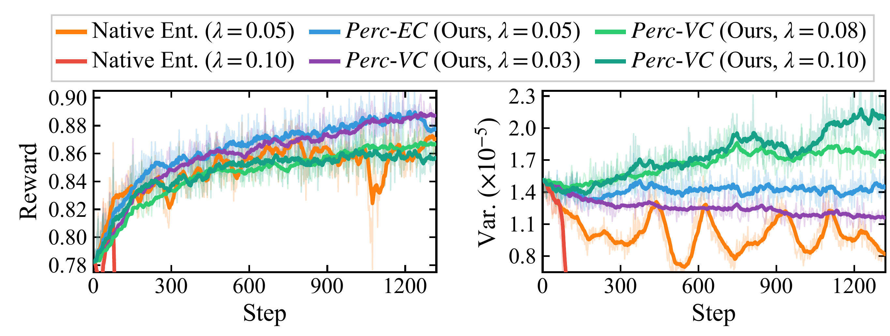
Figure 8. DDPO. Training dynamics under DDPO. Left: reward $\mathcal{R}$. Right: within-group perceptual variance.
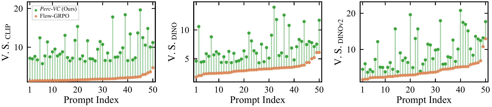
Figure 9. Per-Prompt Vendi Scores. For each feature space, the top-50 PartiPrompts are selected by Perc-VC score and sorted by Flow-GRPO score, with 100 samples per prompt. Left: CLIP. Middle: DINO. Right: DINOv2.
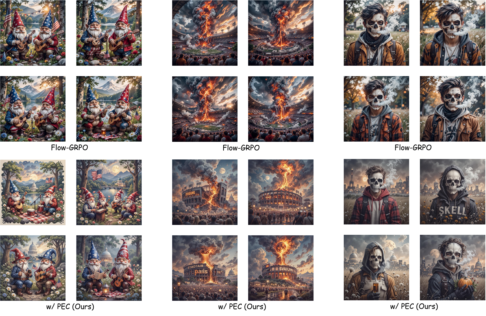
Extended Diversity Visualization. Perc-EC preserves visible variation across prompts and visual domains.
In a blind, randomized, side-by-side study comparing Perc-EC with Flow-GRPO, 20 volunteers provided 100 judgments over 20 unique image-set pairs (five independent judgments per pair). Perc-EC is preferred in 64% of overall judgments and 82% of diversity judgments, while image quality is rated comparably (38% Perc-EC vs. 43% Flow-GRPO, 19% no preference).
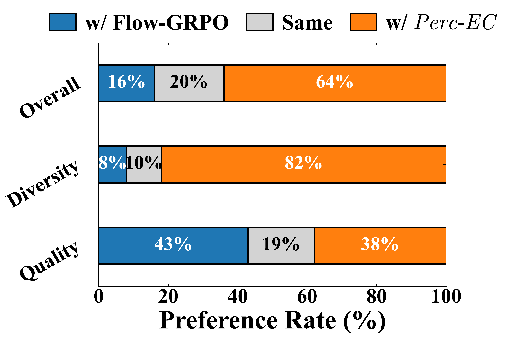
User Study Preferences.
@article{tan2026perceptualentropy,
title={When Policy Entropy Constraint Fails: Preserving Diversity in Flow-based RLHF via Perceptual Entropy},
author={Tan, Xiaofeng and Liu, Jun and Gao, Bin-Bin and Fan, Yuanting and Jiang, Xi and Wang, Chengjie and Wang, Hongsong and Zheng, Feng},
booktitle={Advances in Neural Information Processing Systems},
note={NeurIPS 2026 Spotlight},
year={2026}
}